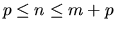
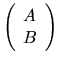
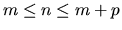
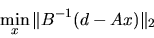

Next: Standard Eigenvalue and Singular
Up: Driver Routines
Previous: Linear Least Squares (LLS)
Contents
Index
Generalized Linear Least Squares (LSE and GLM) Problems
Driver routines are provided for two types of generalized linear least squares
problems.
The first is
where A is an m-by-n matrix and B is a p-by-n matrix,
c is a given m-vector, and d is a given p-vector,
with
.
This is
called a linear equality-constrained least squares problem (LSE).
The routine xGGLSE
solves this problem using the generalized RQ
(GRQ) factorization, on the
assumptions that B has full row rank p and
the matrix

has full column rank n.
Under these assumptions, the problem LSE has a unique solution.
The second generalized linear least squares problem is
where A is an n-by-m matrix, B is an n-by-p matrix,
and d is a given n-vector,
with
.
This is sometimes called a general (Gauss-Markov) linear model problem (GLM).
When B = I, the problem reduces to an ordinary linear least squares problem.
When B is square and nonsingular, the GLM problem is equivalent to the
weighted linear least squares problem:

The routine xGGGLM
solves this problem using the generalized QR (GQR)
factorization, on the
assumptions that A has full column rank m, and the
matrix ( A, B ) has full row rank n. Under these assumptions, the
problem is always consistent, and there are unique solutions x and y.
The driver routines for generalized linear least squares problems are listed
in Table 2.4.
Table 2.4:
Driver routines for generalized linear least squares problems
| Operation |
Single precision |
Double precision |
| |
real |
complex |
real |
complex |
| solve LSE problem using GRQ |
SGGLSE |
CGGLSE |
DGGLSE |
ZGGLSE |
| solve GLM problem using GQR |
SGGGLM |
CGGGLM |
DGGGLM |
ZGGGLM |
Next: Standard Eigenvalue and Singular
Up: Driver Routines
Previous: Linear Least Squares (LLS)
Contents
Index
Susan Blackford
1999-10-01